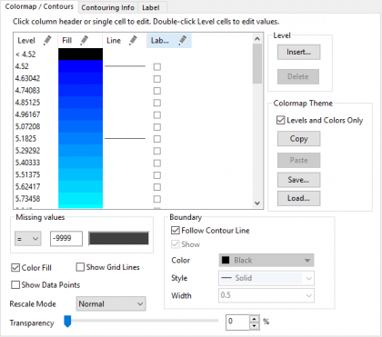
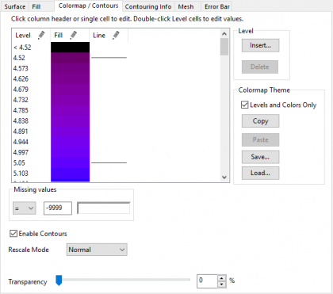
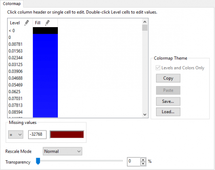
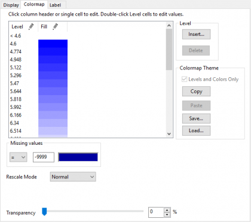

Weitere relevante Videos: Konturdiagramme und Farbabbildung
Weitere relevante Videos: Konturdiagramme und Farbabbildung
 Weitere relevante Videos: Konturdiagramme und Farbabbildung
Weitere relevante Videos: Konturdiagramme und Farbabbildung
Der Dialog Details Zeichnung für farbige Oberflächen-, Kontur- und Bilddiagramme sowie 2D-Diagramme mit Farbindizes verfügen über die Registerkarte Farbpalette (für Konturdiagramme als Farbpalette/Kontur bezeichnet), die Bedienelemente zum Anpassen von Ebenen, Füllfarbe, Konturlinien, Konturbeschriftungen und Füllmethoden bietet.
| Kontur | 3D-Oberfläche |
|  |  |
| Bild | Heatmap |
|  |  |
| Ebene |
Origin zeigt eine Standardeinstellung der Ebenen an, indem erst die Werte für Minimum und Maximum gesucht werden, die in dem matrixbasierten Diagramm (Z-Werte) oder dem arbeitsblattbasierten Diagramm (Spaltenwert aus der Indizierung) gezeichnet wurden, und dann ein Inkrement berechnet wird, das acht Farbebenen erzeugt. Zwei zusätzliche Ebenen werden hinzugefügt, um Werte darzustellen, die kleiner sind als der minimale oder größer als der maximale Wert. Einzelne Werte können in der Liste durch einen Doppelklick bearbeitet werden. Sie können auch auf die Überschrift Ebene klicken, um den Dialog Ebenen festlegen zu öffnen. Sie können dann die Ebenen als eine Gruppe bearbeiten. Ebene ist für alle oben stehenden Diagrammtypen verfügbar. |
|
|---|---|---|
| Füllung |
Origin ist standardmäßig darauf eingestellt, eine Farbliste zu verwenden, die Gelb und Grün zwischen den Grenzen von Rot und Blau einführt. Einzelne Farben und Füllmuster können in der Liste durch Klicken bearbeitet werden, oder Sie können auf die Überschrift Füllung klicken, um den Dialog Füllung zu öffnen, auf dem Sie die Füllmethode und die Eigenschaften als Gruppe bearbeiten können. Füllung ist in allen oben stehenden Diagrammtypen verfügbar.
|
|
| Linie |
Jede Ebene der Farbabbildung kann eine Konturlinie zeigen. Einzelne Linien können ein- oder ausgeschaltet und bearbeitet werden, indem Sie auf die erste Zeile der Spalte Linie oder auf die Überschrift der Linie klicken und so den Dialog Konturlinien öffnen, in dem Sie die Linieneigenschaften als Gruppe bearbeiten können. Linie ist nur für Konturdiagramme verfügbar.
|
|
| Beschriftungen |
Jede Ebene der Farbabbildung kann eine Konturbeschriftung zeigen. Einzelne Beschriftungen können eingeschaltet werden, indem Sie das Kontrollkästchen in der Zeile der Spalte Beschriftungen aktivieren oder auf die Überschrift Beschriftungen klicken. Dadurch öffnet sich der Dialog Konturbeschriftungen, in dem Sie das Zeigen bzw. Verbergen von Beschriftungen als Gruppe bearbeiten können. Beschriftungen sind nur für Konturdiagramme verfügbar.
|
Auf der Registerkarte Farbpalette/Kontur des Dialogs Details Zeichnung klicken Sie doppelt auf eine beliebige Zelle in der Spalte Ebene..., um den Wert der Ebene direkt zu bearbeiten. Die Werte werden auf diejenigen beschränkt, die zwischen dem vorherigen und dem nächsten Ebenenwert liegen.
oder
Um die Ebenen für Minimum oder Maximum benutzerdefiniert anzupassen:
oder
Außerdem lässt sich das Intervall zwischen den Ebenen angeben oder die Anzahl der Hauptebenen und Nebenebenen manuell festlegen.
Sie können auch mit dem Element Erste Ebene den Wert der ersten Hauptebene festlegen.
Um Farben für den vollen Datenbereich festzulegen, klicken Sie auf die Überschrift Füllung. Wählen Sie im Dialog Füllen die Modi der Farb- und Mustererzeugung (siehe Farberzeugung durch Interpolation unten).
Wenn die Füllfarbe mit der Palette oder Farbliste verknüpft ist, können Sie die einzelnen Füllfarben nicht bearbeiten, indem Sie in der Spalte Füllung auf sie klicken (der Dialog Füllung wird mit abgeblendeten Bedienelementen geöffnet).
|
Kontur
|
3D-Oberfläche
|
|---|
| Beschränkte Mischung | Wählen Sie die Option Beschränkte Mischung, um eine Füllfarbe für die minimale Ebene (Von) und eine für die maximale Ebene (Bis) auszuwählen und die Ebenen zwischen diesen beiden Endpunkten mit einer linearen Mischung der beiden Farben zu füllen. |
|---|---|
| Mischung mit 3 Farben festlegen |
Verwenden Sie diese Option, um eine Füllfarbe für die Ebene des Minimums (Von), eine Füllfarbe für die mittlere Ebene (Mitte) und eine Füllfarbe für die Ebene des Maximums (Bis) auszuwählen und um einen Zellenbereich mit einer Abstufung von drei Farben zu füllen.
Legen Sie azßerdem fest, wie die Mittlere Position bestimmt wird:
|
| Farben zu Mischung hinzufügen | Wählen Sie diese Option, damit Origin automatisch komplementäre Farben in die Mischung aufnimmt. Diese Option bietet Füllfarben, die eindeutiger sind als die der Beschränkten Mischung. |
| Palette laden |
Laden Sie die Palette und wenden Sie sie für die Farbfüllungen an. Klicken Sie auf die Schaltfläche Palette auswählen. Sie haben die Auswahl unter 40 Standardpaletten. Außerdem können Sie in der Liste der Paletten zu den benutzerdefinierten Paletten navigieren, indem Sie auf Weitere Paletten... klicken.
|
| Farbliste |
Laden Sie die Farbliste und wenden Sie sie auf Farbfüllungen an. Klicken Sie auf die Schaltfläche Farbliste auswählen. Sie können eine Standardfarbliste oder eine benutzerdefinierte Farbliste.
|
| Von | Dies ist nur verfügbar, wenn entweder Beschränkte Mischung, Beschränkte Mischung mit 3 Farben oder Farben zu Mischung hinzufügen gewählt ist. Verwenden Sie dies, um die Farbe für die Minimumebene festzulegen. |
| Mitte | Diese Option ist nur verfügbar, wenn Beschränkte Mischung mit 3 Farben aktiviert ist. Verwenden Sie dies, um die Farbe für die mittlere Ebene festzulegen. |
| Bis | Dies ist nur verfügbar, wenn entweder Beschränkte Mischung, Beschränkte Mischung mit 3 Farben oder Farben zu Mischung hinzufügen gewählt ist. Verwenden Sie dies, um die Farbe für die Maximalebene festzulegen. |
Die nur lesbaren Felder in der Gruppe Bereich zeigen den Bereich der Ebenen an, die von den aktuellen Dialogeinstellungen beeinflusst werden. Um einen anderen Bereich festzulegen, müssen Sie den Dialog schließen und den gewünschten Bereich aus der Spalte Ebene der Registerkarte Farbpalette/Kontur auswählen und dann erneut auf die Überschrift Füllung klicken.
Sollen alle Ebenen bearbeitet werden, stellen Sie sicher, dass nicht mehr als eine Ebene in der Spalte Ebene ausgewählt ist (oder dass alle Ebenen ausgewählt sind).
Aktivieren Sie Inkrementmuster verwenden.
Deaktivieren Sie Inkrementmuster verwenden.
Sie können auf die Zeile in der Spalte Linie klicken, um den Dialog Linie zu öffnen:
Aktivieren oder deaktivieren Sie das Kontrollkästchen Zeigen, um die Linie anzuzeigen oder zu verbergen. Wenn das Kontrollkästchen aktiviert ist, können Sie die Linienfarbe, den Stil und die Breite benutzerdefiniert anpassen.
| Hinweis: Wenn Linie auf Nur auf Hauptebenen zeigen festgelegt ist, ist die einzelne Linie außer der, die sich auf einer Hauptebene befindet, nicht durch Klicken bearbeitbar. Um die Linie für die einzelnen Ebenen zu zeigen/verbergen, sollten Sie doppelt auf den Header Linie klicken und das Kontrollkästchen Nur auf Hauptebenen zeigen im Dialog Konturlinien deaktivieren. |
oder
Sie können dann den Dialog Konturlinien verwenden, um den Bereich der Konturlinien zu bearbeiten:
| Linien zeigen |
Dieser Abschnitt ist nur aktiv, wenn alle Ebenen der Konturlinien bearbeitet werden.
|
|---|---|
| Linieneigenschaften |
|
Zum Beschriften der Konturlinien klicken Sie auf der Registerkarte Beschriftungen auf die Spaltenüberschrift, um den Dialog Konturbeschriftungen zu öffnen.
|
Wenn Sie ein Konturdiagramm mit Hilfe der Minisymbolleiste Konturbeschriftungen zeigen |
Wenn Nur auf Hauptebenen zeigen nicht aktiviert ist, können Sie die Ebenen einzeln beschriften, indem Sie die Spaltenkästchen Beschriftung auf der Registerkarte Farbpalette/Kontur aktivieren.
|
Hinweis: Um einzelne Beschriftungen zu Ihrem Konturdiagramm hinzuzufügen, drücken Sie die Tasten Strg + Shift und klicken Sie genau auf eine Konturlinie. Klicken Sie dann mit der rechten Maustaste und wählen Sie Konturbeschriftung hinzufügen. Sie können die Position anpassen, indem Sie mit der Maus an der hinzugefügten Konturbeschriftung ziehen. |
Verwenden Sie diese Schaltflächen in der Gruppe, um Ebenen einzufügen oder zu löschen.
Um eine Ebene einzufügen:
Um eine Ebene zu löschen:
|
Matrix-/XYZ-Oberfläche
|
Matrixkontur
|
XYZ-Konturdiagramm
|
|---|
Bedienelementgruppe der Farbfüllung für Matrix-/XYZ-Oberfläche
Bedienelementgruppe der Farbfüllung für Matrixkontur (gilt auch für virtuelle Matrix).
Bis Konturlinien füllen verwendet die lineare Interpolation der Zellenwerte, um die Platzierung der Konturlinie zu bestimmen. Farben werden in unregelmäßig gezeichnete Konturlinien mit Hilfe von Farbskalenwerten gefüllt. Im Gegensatz dazu behandelt die Option Bis Gitternetzlinien füllen jede Matrixzelle als ein diskretes Rechteck (oder Quadrat) mit einer Farbskala, die jedem Rechteck zugewiesen ist. Jedes hat seine Anwendungen, und Sie müssen bestimmen, welche für Ihre spezielle Anwendung sinnvoll ist.
| Hinweis: Origins Heatmap verwendet die Einstellung Bis Gitternetzlinien füllen. Mit dieser Einstellung wird jeder Matrixzelle ein einzelner Farbwert aus der gewählten Farbskala zugewiesen. Weiterhin werden Zellen oder "Blöcke" auf den Hilfsstrichen zentriert. Daher verwendet ein Konturdiagramm, das aus einer 10x10-Matrix erstellt wurde, vielleicht die Achsenskalierungswerte von 1 bis 10, während eine Heatmap, die aus der gleichen Matrix erstellt wurde, Skalierungswerte von 0,5 bis 10,5 hat. |
Bedienelementgruppe der Farbfüllung für XYZ-Kontur
|
Hinweis:
Die Gruppe Farbfüllung ist für Bilddiagramme oder 2D-Diagramme mit Farbkodierung nicht verfügbar. |
Unter der Gruppe Fehlende Werte können Sie nicht nur den Schwellenwert für fehlende Werte in der Matrix festlegen, sondern auch die Art und Weise angeben, mit der Werte gemäß Schwellenwert interpretiert werden sollen. Nachdem Sie die Operatoren in der Auswahlliste ausgewählt haben, können Sie Werte, die größer als/kleiner als/gleich der/dem Schwellenwert sind als fehlende Werte zuweisen. Dies stellt eine Ergänzung des fehlenden Werts in Origin dar, der in einer Matrix mit -- angezeigt wird.
Sie können dann auf das Farbfeld klicken, um eine Farbe für diese fehlenden Werte festzulegen.
Verwenden Sie die Schaltflächen in der Gruppe zum Kopieren oder Speichern/Laden der Farbabbildungseinstellungen, die in der Tabelle Farbabbildung festgelegt sind.
Diese Schaltflächengruppe kann alle Einstellungen kopieren oder speichern, die in der Tabelle Farbabbildung festgelegt sind, einschließlich Ebenen, Füllfarben, Konturlinien und Beschriftungen. Sie können das Kontrollkästchen Nur Ebenen und Farben einschließen aktivieren, um die Einstellungen nur in den Spalten Ebene und Füllung zu kopieren/speichern.
Um Farbabbildungseinstellungen von einer Zeichnung in eine andere zu kopieren:
Um die Farbabbildungseinstellungen als Diagrammdesign zu speichern:
Um ein vorhandenes Diagrammdesign für die Farbabbildungseinstellungen zu verwenden:
Diese Gruppe enthält Bedienelemente zum benutzerdefinierten Anpassen der Konturgrenze. Sie ist nur für Konturdiagramme verfügbar (entweder XYZ oder Matrix). Für XYZ-Konturdiagramme werden die Grenzen auf der Registerkarte Kontur-Info definiert, während im Fall von Konturdiagrammen aus Matrizen die Datengrenze verwendet wird.
| Konturlinie folgen |
Wenn dieses Kontrollkästchen aktiviert ist, folgen die Konturgrenzlinien dem Stil der Konturlinien. Nur wenn es nicht aktiviert ist, kann der Stil der Grenzlinie separat benutzerdefiniert angepasst werden (d.h., alle Optionen unten sind verfügbar). |
|---|---|
| Zeigen |
Legen Sie fest, ob die Konturgrenzlinien angezeigt werden. Nur wenn diese Option aktiviert ist, werden die Bedienelemente unten verfügbar. |
| Farbe |
Legen Sie die Farbe der Grenzlinien fest. |
| Stil |
Wählen Sie den Linienstil in der Auswahlliste. |
| Breite |
Legen Sie die Linienbreite fest, indem Sie den Wert entweder eingeben oder in der Auswahlliste auswählen. |
Mit der Auswahlliste des Modus Skalierung können Sie steuern, ob die Ebenen, die auf den Registerkarten Farbpalette oder Farbpalette/Kontur eingerichtet sind, bei Änderung der aktuellen Werte aktualisiert werden.
| Normal |
Origin findet automatisch die Werte für Minimum und Maximum in Ihrem Datensatz und erzeugt dann gleich große Ebenen sowie zugehörige Farben. |
|---|---|
| Manuell |
Die aktuellen Ebenen und deren zugehörige Farben, die auf der Registerkarte Farbpalette/Kontur angegeben sind, bleiben festgelegt, unabhängig vom Bereich Ihres Datensatzes. Um die Ebenen und die Farben zu ändern, müssen Sie die Einstellungen Ebene und Füllung bearbeiten. |
| Fest von |
Die Ebene für das Minimum bleibt unverändert, unabhängig von den Werten Ihres Datensatzes. |
| Fest bis |
Die Ebene für das Maximum bleibt unverändert, unabhängig von den Werten Ihres Datensatzes. |
| Auto |
Die Farbebenenen und -füllungen werden automatisch neu skaliert, wenn der Datenbereich geändert wird. |
Um die Transparenz der Füllflächen mit Farbabbildung (Kontur, Bild, Heatmap oder Oberfläche) festzulegen, verschieben Sie den Schieber oder geben Sie eine gewünschte ganze Zahl zwischen 0 und 100 im Kombinationsfeld ein.
Hinweis: 0 bedeutet, dass die Fläche gar nicht transparent und bei 100 vollkommen transparent ist.
Klicken Sie unten im Dialog auf die Schaltfläche Arbeitsmappe (wenn die Rohdaten eine Matrix sind, ist diese Schaltfläche eine Matrixschaltfläche). Die Arbeitsmappe/Matrix enthält Rohdaten, wenn sie geöffnet wird. Wenn die Zeichnung auf Grundlage einer virtuellen Matrix erstellt wird, klicken Sie auf die Schaltfläche Arbeitsmappe. Der Virtuelle Matrixmanager sollte mit der entsprechend markierten virtuellen Matrix geöffnet werden.